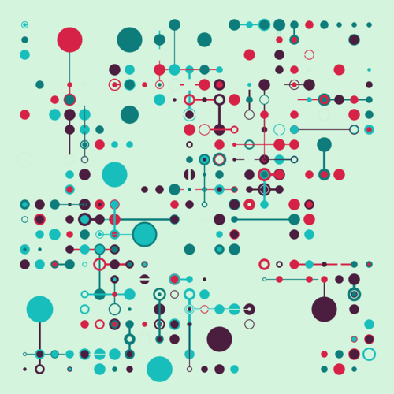

Building Tech Together

If you are an undergraduate student embarking on a semester-long software project as part of a team, this book will give you tools that will help you succeed. Some of these are purely technical, like a version control system or an IDE; others are guidelines to help you form teams, manage people who aren't pulling their weight, cut features when time runs short, and understand who owns the things you produce.
Our aim is to teach you how to be a compassionate programmer: one who cares as much about the well-being of their colleagues and users as they do about their own. This focus is not entirely altruistic—everything you do to help others also helps your future self—but now that we all know how much harm software can do, we hope you'll be interested in some practical idealism.
"Building Tech Together" is a Third Bit production.
Help Wanted
If you would like to help get this tutorial to a usable state, please see these issues or contact the maintainer.